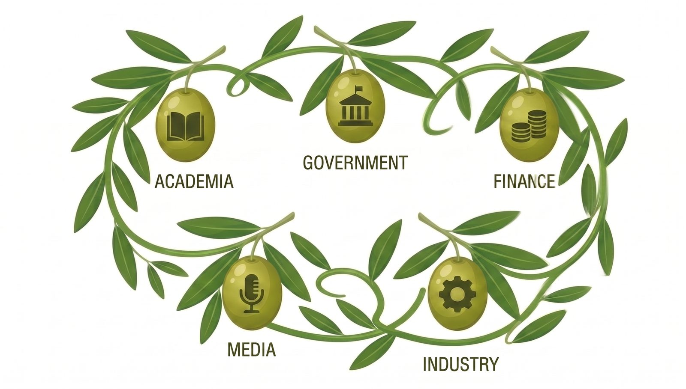

メンバー
産・学・官・金・言、5つの顔を持つ仲間たち。
OLIVEは一機関では実現できない規模のデータ・人材・信用力を、参画メンバーどうしで分かち合う場です。

参画機関のカテゴリ
8つの高等教育機関
岡山大学、岡山県立大学、岡山理科大学、ノートルダム清心女子大学、岡山商科大学、中国学園大学、環太平洋大学、津山工業高等専門学校
改革先導拠点校
N-E.X.T.ハイスクール改革先導拠点校（例：東岡山工業高校、操山高校）ほか、県内高校改革を牽引する教育現場
4つの自治体
岡山県、岡山市、倉敷市、真庭市
経済団体・地域未来牽引企業
一般社団法人岡山経済同友会、岡山県商工会議所連合会、岡山県商工会連合会、岡山県中小企業団体中央会 ほか
地域金融機関
一般社団法人岡山県銀行協会 ほか、地域金融機関
報道・発信パートナー
株式会社山陽新聞社、テレビせとうち、8bitNews、学生広報サークルOTD
シンクタンク・支援団体
岡山経済研究所、岡山県産業振興財団、ジェトロ岡山
大学コンソーシアム岡山／OI-Start
大学コンソーシアム岡山（教育資源の共有ネットワーク）、OI-Start（会員企業150社超のアクションタンク）
組織構成（案）
決めるところと、動かすところを、一本の線でつなぐ。
産学官金言のトップが役員会に、同じ機関の実務者が運営委員会に入ります。決定が実行から切り離されない構造です。
役員会
会長1・副会長4・幹事6 ― 産学官金言のトップが集い、プラットフォーム全体の方針を決定する。
運営委員会
委員長1・副委員長4・委員6 ― 役員会と同じ機関の実務責任者が集い、4部会を束ねて事業を統括する。
次世代人材育成部会
リスキリング実装部会
社会人の学び直し講座の設計・運営、県内外の大学・専門学校との連携促進を担う。
広報戦略部会
OLIVEの活動発信、企業・学生・保護者向けPR企画を担う。
データ戦略部会
グランドデザイン検討に向けた情報収集、人材需給ダッシュボードの構築・運用を担う。
当事者を、意思決定の内側に。
参画大学・高専・高校の学生で構成する常設の学生参画組織。各部会に学生委員を配置し、プログラム設計への参画、PBLのモニター、学生メンターの供給、2040年ビジョンの策定とトップへのリバースメンタリング、県内定着施策への提言、県の魅力の域外発信、成果の発信と引継ぎ ―― 7つの役割を担う。
年1〜2回、外部の目でレビュー。
県内外の有識者で構成し、年1〜2回の包括的レビューを実施。ユースボードの提言は部会を経て運営委員会に報告され、アドバイザリーボードのレビューと併せて次年度の事業計画に反映される。
※本ページの組織構成・数値は参画候補機関向け説明資料（令和8年8月時点）に基づく想定であり、参画機関とのご相談を経て確定します。